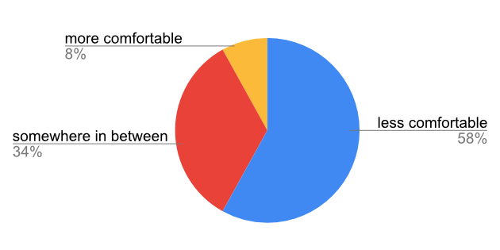
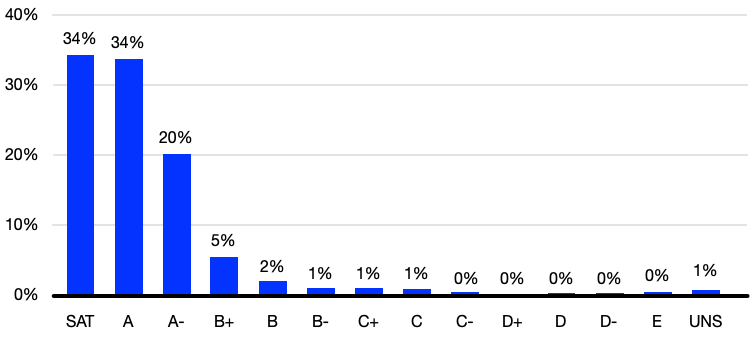
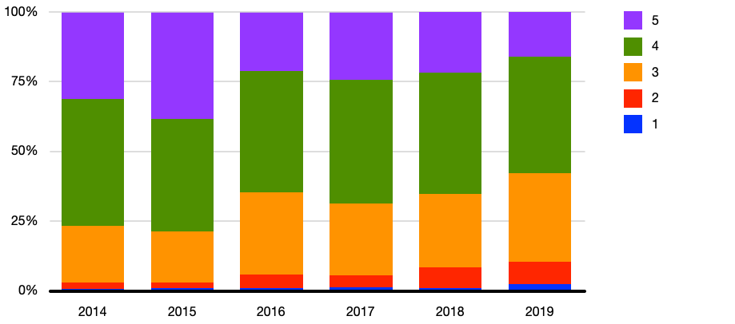
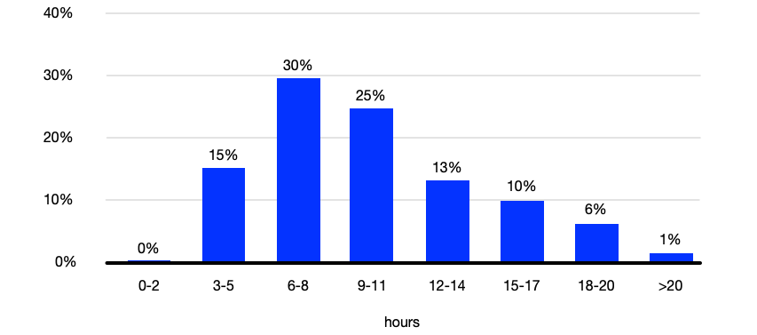
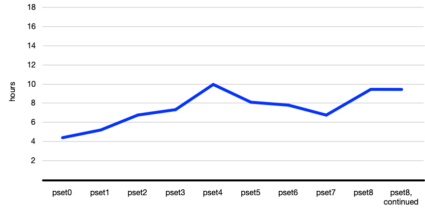

常见问题
电子邮件 heads@cs50.harvard.edu with any other 问题!
- Advice
- College Requirements
- Comfort
- Coronavirus
- Curriculum
- First Years
- Grades
- How can I change from SAT/UNS to letter grade?
- How can I check the status of my Grading Basis Change Request?
- Should I take CS50 SAT/UNS or for a letter grade?
- What is CS50’s grade distribution?
- Which concentrations offer concentration credit for CS50?
- Which concentrations require a letter grade in order for CS50 to count for concentration credit?
- 讲座
- Prior Experience
- 问题集
- 小组课
- Semesters
- Simultaneous Enrollment
- Support
- Tutorials
- Workload
Advice
How should I structure my 周?
Most 周次 follow the pattern below.
| 星期一 | 讲座 | |
| 星期二 | 小组课 | quiz |
| 星期三 | 小组课, tutorials | |
| 星期四 | tutorials | lab |
| 星期五 | tutorials | |
| 星期六 | tutorials | |
| 星期日 | tutorials | 问题集 |
Accordingly, plan to
- attend 讲座 on Mondays (or 观看 recordings thereof if simultaneously enrolled in another 课程 or in a distant 时间 zone),
- 提交 quizzes by Tuesdays,
- attend 小组课 on Tuesdays or Wednesdays,
- 提交 labs by Thursdays,
- optionally attend tutorials on Wednesdays, Thursdays, Fridays, Saturdays, and/or Sundays, and
- 提交 问题集 by Sundays.
College Requirements
Does CS50 satisfy any College requirements?
Yes. You 五月 take CS50 (SAT/UNS or for a letter grade) to fulfill the Science and Engineering and Applied Science distribution requirement or the Quantitative Reasoning with Data requirement, but not both.
Comfort
Will everyone else know 更多 than me? 较少 than me?
Not at all! Approximately two thirds of CS50 students have never taken a CS 课程 before. Moreover, in 秋季 2019, 58% of students described themselves as among those 较少 comfortable, while 8% described themselves as 更多 comfortable, and 34% described themselves as somewhere in between. No matter your own comfort level, then, you’ll be in good company!

Coronavirus
How does this year differ from past years?
CS50 has long been offered online in some form, so this year won’t be all that different, all things considered! 讲座, of 课程, won’t be in person but online via Zoom, as will be 小组课 and tutorials. And there won’t be a CS50 Hackathon or CS50 Fair. But there will still be CS50 Puzzle Day, CS50 Meals (a la Classroom to Table, albeit via Zoom), and 更多, all at a healthy distance!
Curriculum
Does CS50 still have end-of-term tracks?
In 秋季 2019, CS50 offered a choice of 讲座 and 问题集 at term’s end on Web 编程, 移动应用开发, and 游戏开发. It turned out that most students chose the track on Web 编程, so we’ve reverted to focusing on Web 编程 as of 秋季 2020!
Which languages will I learn?
Rather than teach just one language, CS50 introduces students to a range of “procedural” 编程 languages, each of which builds conceptually atop another, among them Scratch, C, Python, SQL, and JavaScript. Along the way does the 课程 also introduce students to HTML and CSS (which are languages but not 编程 languages). The goal, ultimately, is for students to feel not that they “learned how to program in X” but that they “learned how to program.”
Why does CS50 use C?
See this 答案 on Quora!
First Years
Can first years take both CS50 and a Freshman Seminar SAT/UNS?
Yes. Even though first years 五月 not ordinarily enroll in both a Freshman Seminar and another non-letter-graded 课程 in any one term, they 五月 take both CS50 and a Freshman Seminar SAT/UNS.
Should first years take CS50?
Yes, if they would like! In 秋季 2019, first years composed a 多数制 of CS50’s student body. While students should be mindful of CS50’s workload and should perhaps avoid taking 4 pset-based classes, students shouldn’t shy away (from CS50 or any other introductory 课程) simply because they’re first years.
Grades
How can I change from SAT/UNS to letter grade?
If you are a College student, 提交 a Grading Basis Change Request form no later than .
If you are a grad student or cross-registered, 电子邮件 enrollment@fas.harvard.edu no later than , the term’s fifth 星期一, and FAS’s Registrar will make the change for you.
How can I check the status of my Grading Basis Change Request?
If you are a College student, see step 5 of the Change of Grading Basis Workflow.
Should I take CS50 SAT/UNS or for a letter grade?
Unless your (potential) concentration requires that you take CS50 for a letter grade, you should take CS50 SAT/UNS, which is the default. Not only does SAT/UNS allow you to explore an unfamiliar field (whether CS or some other) without fear of “failure,” odds are, 更多 pragmatically, it will reduce undue stress during your semester’s busier times.
What is CS50’s grade distribution?
Per CS50’s 教学大纲, “what ultimately matters in this 课程 is not so much where you end up relative to your classmates but where you, in 周 11, end up relative to yourself in 第 0 周.” Accordingly, provided you put in the 时间 and effort, odds are you’ll fare quite well! In 秋季 2019, 34% of students received a final grade of SAT, 34% of students received a final grade of A, 20% of students received a final grade of A-, 8% of students received a final grade in the B range, and 2% of students received a final grade in the C range, per the below. In cases of E (<1%) or UNS (1%) were typically extenuating circumstances.

Which concentrations offer concentration credit for CS50?
See this spreadsheet.
Which concentrations require a letter grade in order for CS50 to count for concentration credit?
See this spreadsheet. 笔记 that you 五月 take CS50 SAT/UNS and concentrate in CS; CS does not require a letter grade.
讲座
When are 讲座?
讲座 are ordinarily via Zoom on Mondays, 1:30pm–4:15pm ET, which is a double block, but we’ll occasionally end before 4:15pm ET. And we’ll take one or 更多 breaks during most 讲座.
The 课程’s first 讲座, though, will be on .
When are recordings of 讲座 available?
讲座 are live-streamed and available on demand the moment a 讲座’s begun, a la a DVR. So if you are simultaneously enrolled in another 课程 or in a distant 时间 zone, you can 观看 them on 视频 anytime after they’ve begun. Do just take care to 观看 before the 周’s quiz is due!
Prior Experience
Does CS50 have any prerequisites?
No, CS50 does not assume any prior CS or 编程 experience. In fact, 60% of 秋季 2019’s students had never taken a CS 课程 before!
Should I skip CS50 if I already took AP CS A?
Probably not. Most students who have taken AP CS A still take CS50 as it tends to fill in gaps in their knowledge and also introduces them to C (and 更多!).
Should I skip CS50 if I already took AP CSP?
Probably not, unless you took CS50 AP.
问题集
What’s the difference between “较少 comfortable” and “更多 comfortable” problems? Do I have to do both?
In some earlier 问题集, you’ll have a choice between a “较少 comfortable” and a “更多 comfortable” problem.
The “较少 comfortable” are what you might consider the “standard” version of the problem, designed for students who have little or no prior experience. The “更多 comfortable” are the “challenge” version, designed for students who consider themselves 更多 comfortable due to prior study/experience before this class. As such, they 五月 require 更多 concepts than have been covered in the 课程 so far.
You don’t get any extra points for doing the “更多 comfortable” problems. If you 提交 both, we will consider the one with the highest score. For reference, in 秋季 2019, 20-30% of students submitted the “更多 comfortable” problems.
小组课
Is attendance at 小组课 expected?
Yes, as 小组课 are meant to be a 更多 intimate, interactive opportunity to master the 课程’s material.
Semesters
When is CS50 offered?
CS50 is offered primarily in 秋季 term. All students, including concentrators and non-concentrators, are encouraged to take CS50 in 秋季 term. However, SEAS concentrators and secondaries unable to take the 课程 in 秋季 term 五月 take a (smaller-scale) 春季 version of CS50.
How does 春季 term differ from 秋季 term?
The 春季 version of CS50 is for SEAS concentrators (or secondaries) who are unable to take the 课程 in 秋季 term. All students, including concentrators and non-concentrators as well as cross-registrants, are encouraged to take CS50 in 秋季 term instead.
In 秋季 term, students are expected to attend live 讲座 via Zoom as well as live 小组课 via Zoom. In 春季 term, students are expected to 观看 讲座 on 视频 (produced in 秋季 term) and attend live 小组课 via Zoom.
Academically, the terms are equivalent, but the 秋季 version of CS50 includes cultural traditions as well.
| 秋季 | 春季 | |
|---|---|---|
| CS50 Meals | ✓ | |
| CS50 Puzzle Day | ✓ | |
| Enrollment | Unlimited | Limited |
| 最终项目 | ✓ | ✓ |
| Grading Basis | SAT/UNS or letter | letter |
| 讲座 | Live | 视频 |
| 小组课 | ✓ | ✓ |
| 问题集 | ✓ | ✓ |
| Quizzes | ✓ | ✓ |
| Simultaneous Enrollment | ✓ | |
| Test | ✓ | ✓ |
| Tutorials | ✓ | ✓ |
Simultaneous Enrollment
Can I simultaneously enroll in CS50 and another 课程 that meets at the same or overlapping 时间?
Yes, you 五月 simultaneously enroll in CS50 and another 课程 that meets at the same 时间, watching CS50’s 讲座 anytime online and attending the other 课程 via Zoom.
Ordinarily for simultaneous enrollment, you need the permission of the other 课程’s instructor, you need to arrange for “compensatory instruction,” and you need to petition the Administrative Board itself. But the Administrative Board has already granted an exception for CS50 itself, which obviates those needs. You do not need anyone’s permission or signature, and you do not need to petition the Administrative Board.
To simultaneously enroll in CS50 and another 课程 that meets at the same or overlapping 时间, all that you need to do is enroll in both 课程 via my.harvard. CS50 is deliberately listed in the catalog as having no day or 时间 (even though it does meet on Mondays at 1:30pm ET) so that it doesn’t technically conflict with any other 课程. (Otherwise known as a “workaround” in software!)
Can I 观看 recordings of CS50’s 讲座 instead of live via Zoom if they conflict with some other academic commitment?
Yes, but be sure to arrange first with heads@cs50.harvard.edu.
Support
How much academic support does CS50 provide?
Quite a lot! In addition to 讲座, and 小组课, CS50 also offers 更多 than 185 工作人员-hours of tutorials per 周.
Tutorials
How are tutorials different from 答疑时间?
Tutorials are essentially 答疑时间 by appointment, with a member of the 工作人员 and only a small number of classmates present. Tutorials offer opportunities not only for help with 问题集 but also tutoring 更多 generally.
Workload
How difficult is CS50?
For many students, CS50 is simply 更多 时间-consuming than it is difficult. Starting each 周’s 问题集 early, then, makes things easier! And the 课程’s difficulty was also recalibrated 返回 in 2016, per the Q data below.

How much work is CS50?

By mid-semester, most students spend 10+ hours per 周 on the 课程’s 问题集, but it definitely varies by 问题集, per the below, and student.

笔记 that, in 秋季 2019, students had two 周次 to complete 问题集 8, compared to one 周 for each of the other 问题集.